ITDS261
Quiz 2
Section 2 · 10 พ.ย. 2569 · 10.45–12.15
แผนอ่านตามวัน
- อา. 8 พ.ย.S1 DFD: นิยามและกฎ (~30 นาที)
S2 หา Error ใน DFD (~25 นาที) - จ. 9 พ.ย.S3 Git (~25 นาที)
S4 Unit test (~35 นาที)
ทำข้อสอบ - อ. 10 พ.ย. วันสอบทวนกับดักด้านล่างก่อนเข้าห้อง ก่อน 10.45
ข้อสอบมีอะไรบ้าง
ตามใบประกาศ: DFD Understanding, Error detection in DFD, Git functions, Unit test
- อาจารย์ภัทรพรตอบอีเมล: DFD Understanding วัด definition และ rules ไม่ใช่วาด Level 1/2/3
- Error detection = วิเคราะห์ DFD ที่ให้ แล้วตอบคำถาม
- ปิดหนังสือ ห้ามนำโน้ตหรือ cheat sheet เข้า
- Data flow ต้องมี process อยู่ปลายหนึ่ง: entity→entity, entity↔store, store→store ผิดหมด
- Process ต้องมีอย่างน้อย 1 input และ 1 output
- Context diagram: process เดียว เลข 0 • Level 2 ใช้ 1.1, Level 3 ใช้ 1.1.1
git pull= fetch + merge • add → commit → push คนละขั้น- Hotfix แตกจาก tag บน master • feature/release แตกจาก develop
- Cyclomatic complexity = decision node + 1
1. DFD Understanding : definition และ rules
แผนที่คำศัพท์ DFD (อ่านก่อน)
ศัพท์ทั้งหมดแบ่งเป็น 4 กลุ่ม ส่วนที่เป็นเส้นหนาสีเหลือง (ธีมสว่างเป็นสีน้ำตาล) ในภาพเล็กคือสิ่งที่คำนั้นหมายถึง ในเนื้อหาด้านล่าง คำที่มีเส้นประใต้คำ แตะหรือชี้เพื่อดูความหมายได้ทันที
1.1 DFD และสัญลักษณ์ 4 ตัว
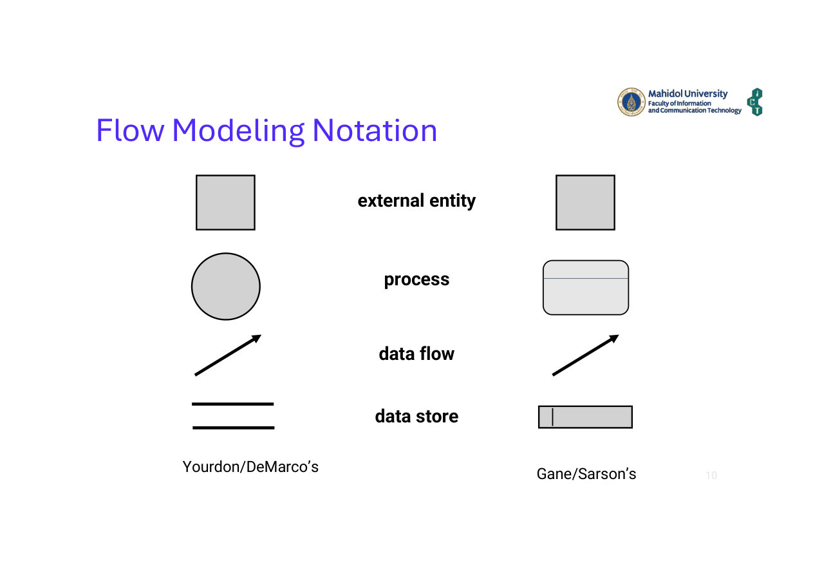
| องค์ประกอบ | นิยาม (ตามสไลด์) | Yourdon/DeMarco | Gane/Sarson |
|---|---|---|---|
| External entity | ผู้ ผลิตหรือบริโภคข้อมูล (producer/consumer of data) เป็นคน องค์กร หรือระบบ ภายนอก ระบบ ข้อมูลต้องมีที่มาและต้องถูกส่งไปที่ใดที่หนึ่งเสมอ | สี่เหลี่ยม | สี่เหลี่ยม |
| Process | ตัวแปลงข้อมูล (data transformer) เปลี่ยน input เป็น output เช่น คำนวณ ตัดสินใจ เรียง/สรุป จัดระเบียบ สั่งงาน process อื่น ใช้ข้อมูลที่เก็บไว้ ข้อมูลต้องถูกประมวลผลเสมอ | วงกลม | สี่เหลี่ยมมุมมน แบ่งเป็น 2 ช่อง (เลข / ชื่อ) |
| Data flow | ข้อมูลที่กำลังเคลื่อนที่ (data in motion) = input ของ process หรือ output ของ process; การสร้าง/ลบ/แก้ข้อมูลในไฟล์หรือฐานข้อมูลเรียกว่า data store | ลูกศร | ลูกศร |
| Data store | ที่เก็บข้อมูลถาวรที่ process ต้องใช้หรือสร้าง ลูกศร ออกจาก store = การดึงข้อมูล (retrieval) ลูกศร เข้า store = การอัปเดต/เพิ่มข้อมูล | เส้นขนาน 2 เส้น | สี่เหลี่ยมปลายเปิด มีช่องเลข D1, D2 ด้านซ้าย |
ตัวอย่างสไลด์ของวงกลม process: compute triangle area รับ base, height ส่ง area • Process ต้องผ่านการ "refine" จนแต่ละ bubble ทำเรื่องเดียว
1.2 Context diagram และลำดับชั้น (hierarchy)
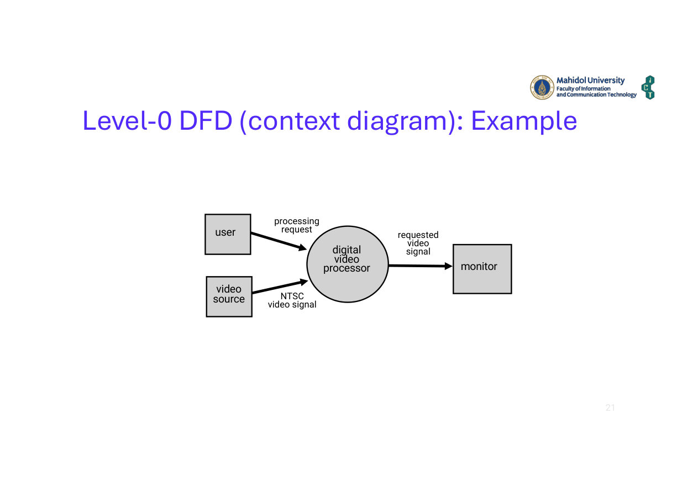
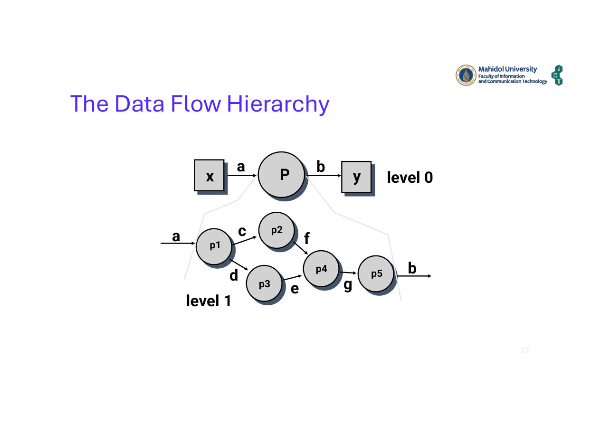
- เริ่มวาดจาก context diagram เสมอ (หรือเรียก level 0), ต้องแสดง external entity ที่ level 0 และ label ลูกศรทุกเส้น
- DFD ขยายรายละเอียดเป็นหลายระดับด้วย decomposition: child diagram แสดงส่วนหนึ่งของ parent ให้ละเอียดขึ้น
- แต่ละ bubble ถูก refine จนทำสิ่งเดียว • expansion ratio ลดลงเมื่อระดับเพิ่ม • ระบบส่วนใหญ่ต้องการ 3–7 ระดับ • ลูกศรเส้นเดียวอาจถูกขยายเมื่อลงระดับ (data dictionary ให้รายละเอียด)
การให้เลข (Diagram numbering)
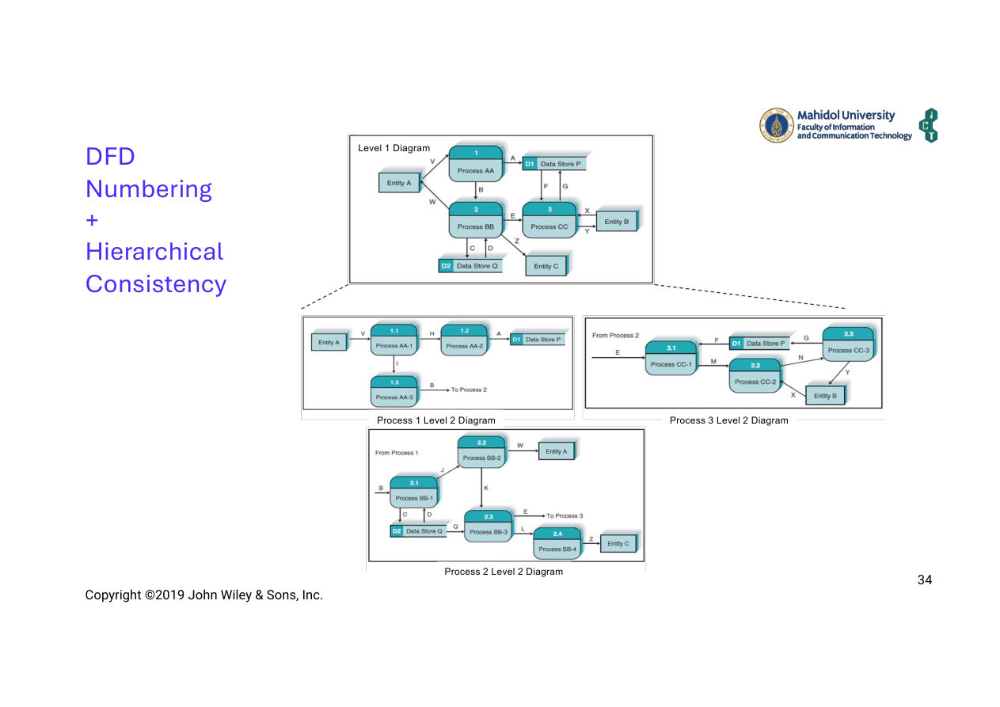
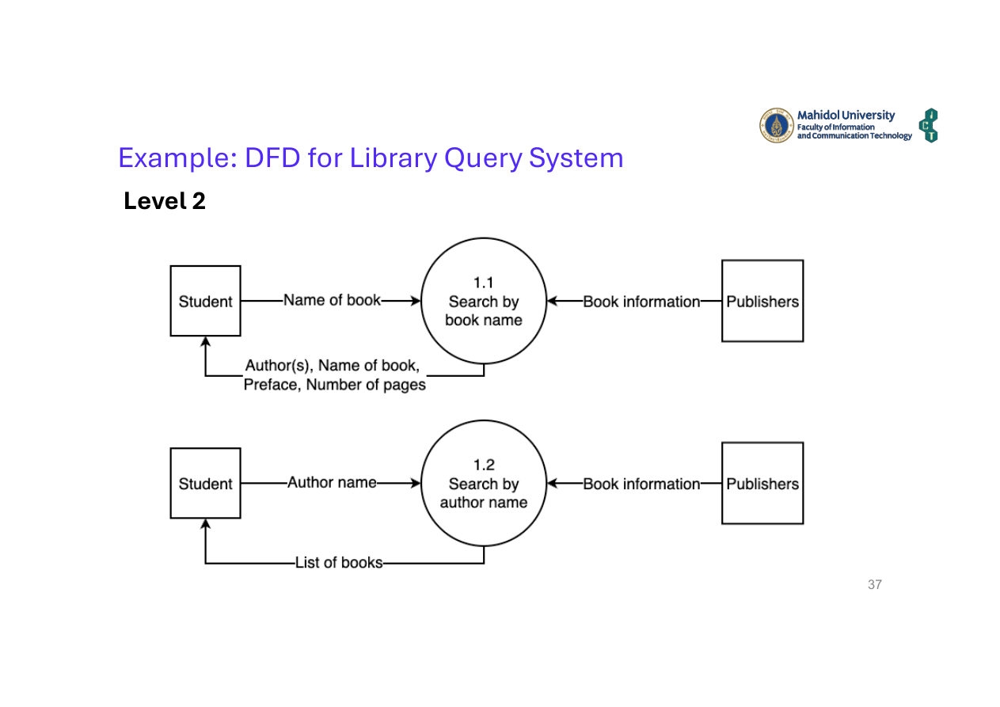
| ระดับ | เลข process | ตัวอย่าง |
|---|---|---|
| Context | "Level 0" process เป็น 0 | 0 |
| Level 1 | จำนวนเต็ม | 1, 2, 3 |
| Level 2 | มี 1 จุด: เลขแม่ . เลขเฉพาะ | 1.1, 1.2, 1.3 |
| Level 3 | มี 2 จุด | 1.1.1, 1.1.2 |
ตัวอย่างสไลด์ Library Query System: Level 0 = 0 Library Query System (Student, Publishers) → Level 1 = 1 Search for book, 2 Check member status → Level 2 ของ process 1 = 1.1 Search by book name, 1.2 Search by author name
1.3 Balancing และ consistency
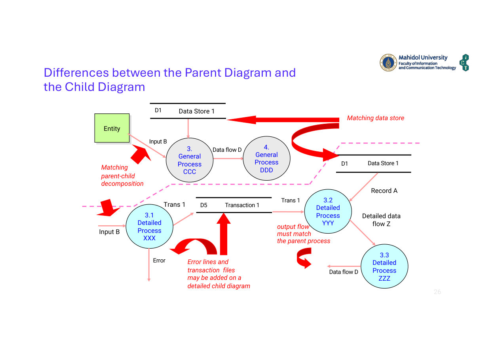
- Input (output) flow ของ parent ต้องปรากฏใน child เป็น input (output) • และ flow ของ child ต้องปรากฏใน parent ด้วย
- Output flow ของ child ต้องตรงกับ parent process (matching parent-child decomposition, matching data store)
- Child diagram เพิ่ม error lines และ transaction files ได้ (สไลด์ L6 หน้า 26) โดยไม่ถือว่าไม่ balance
Dataflow analysis: Internal consistency (L6 หน้า 29–30)
| องค์ประกอบ | ข้อกำหนดตามสไลด์ |
|---|---|
| Context diagram | ต้องมี • มี process เดียว • อย่างน้อย 1 input จาก external entity และ 1 output ไป external entity • process ต้องเลข 0 |
| Detailed DFD | อย่างน้อย 1 process • ไม่เกิน 7 process |
| Process | อย่างน้อย 1 input และ 1 output • ต้องเชื่อมกับ data store, process หรือ external entity • ต้องมี label |
| External entity | ปรากฏเฉพาะใน context diagram (ตามสไลด์) • ต้องเชื่อมกับ process • ต้องมี label |
| Data flow | ต้องเป็นตัวเชื่อม ระหว่าง process กับ process อื่น / data store / external entity • flow เข้า(ออก) data store ต้องมีองค์ประกอบเป็นเซตย่อยของ data store • ต้องมี label |
| Data store | เป็นตัวเชื่อม ระหว่าง 2 process • ต้องมี label |
Hierarchical consistency (L6 หน้า 31–32)
- ต้องมี parent diagram เสมอ ยกเว้น context diagram
- Process ต้อง decompose เป็น diagram อื่น หรือ primitive process specification • ต้องให้เลขสอดคล้องกับ parent
- Flow input/output ของ parent ต้องปรากฏใน child และ child ต้องปรากฏใน parent • flow ที่แตกจาก parent flow ใน child ต้องรวมกันได้ตรงกับ parent
- Data flow ต้อง decompose เป็น record definition หรือ element definition • Data store ต้อง decompose เป็น file definition หรือ record definition (ตรงกับ ERD ได้)
- Primitive process specification: input/output ต้องตรงกับ primitive process ใน DFD และใช้ identifier เดียวกัน
1.4 กฎของ data flow (Rules for Data Flows)
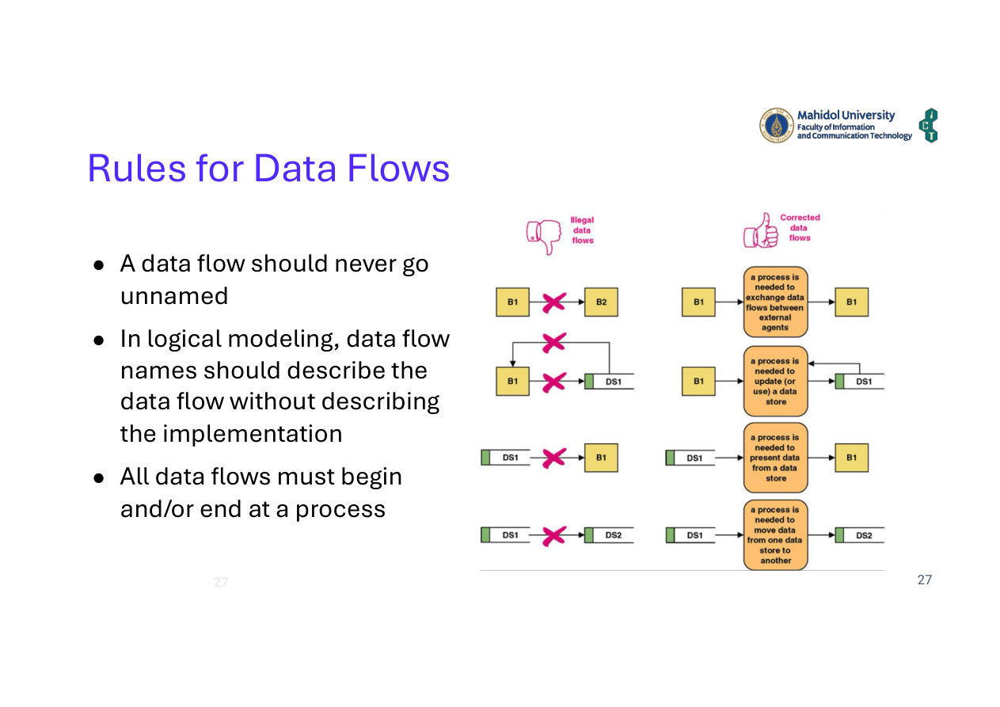
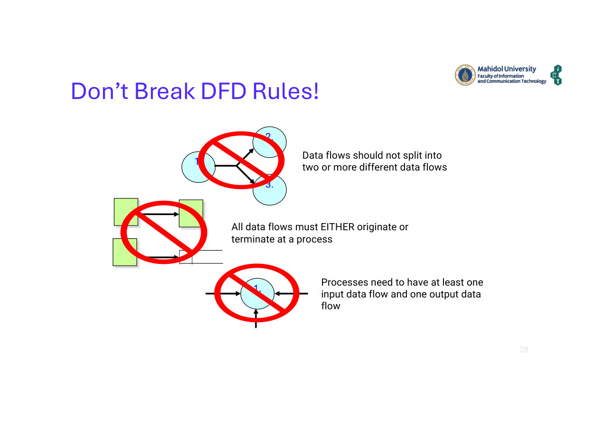
- Data flow ห้ามไม่มีชื่อ (never go unnamed)
- ใน logical modeling ชื่อ flow ต้องอธิบาย ข้อมูล โดยไม่ระบุ วิธีทำ/implementation
- ทุก data flow ต้องเริ่มและ/หรือจบที่ process (ต้องมี process อยู่ปลายใดปลายหนึ่ง)
Don't Break DFD Rules! (L7 หน้า 9, L6 หน้า 28):
- Data flow ห้ามแตกเป็นสอง flow หรือมากกว่า (ที่เป็นข้อมูลต่างกัน) จากเส้นเดียว
- Data flow ต้อง ออกจากหรือเข้าสู่ process (ห้าม entity → entity, entity ↔ store, store → store)
- Process ต้องมี อย่างน้อย 1 input และ 1 output
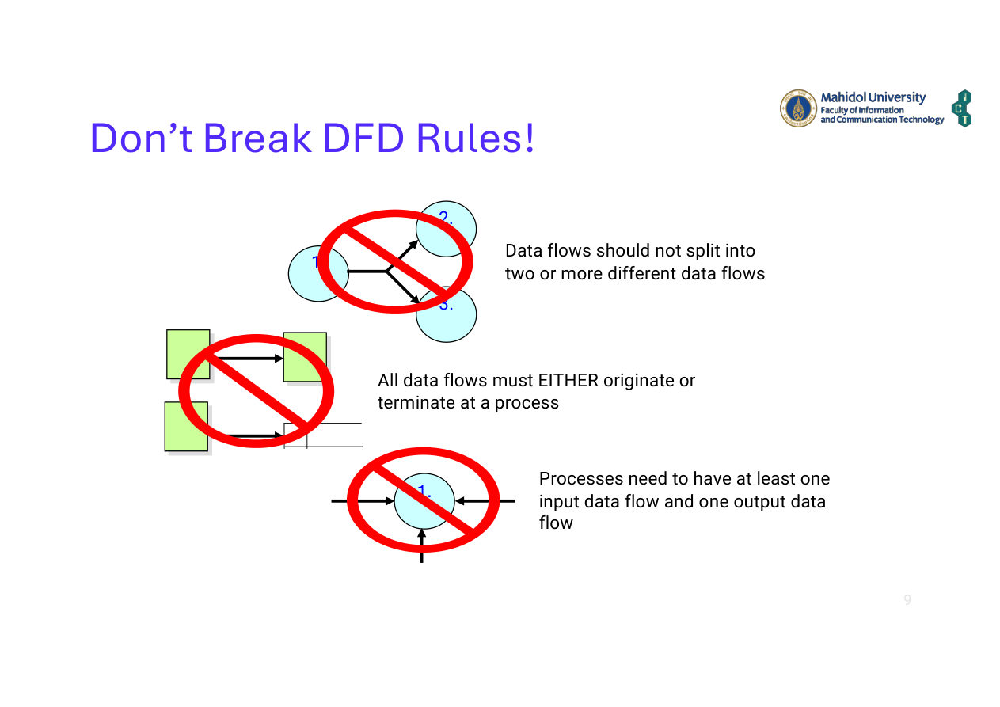
1.5 อธิบาย Process: PSPEC, Structured English, Decision table
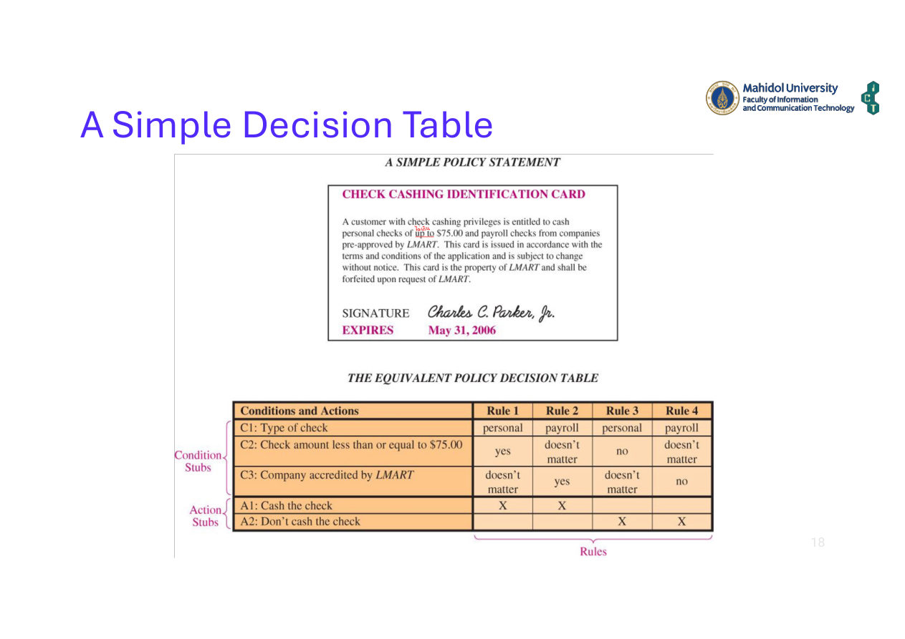
ตัวอย่างสไลด์: process analyze triangle รับ side dimensions ส่ง error message หรือ triangle type (equilateral / isosceles / scalene)
1.6 Control flow (อ่านไว้ รอง)
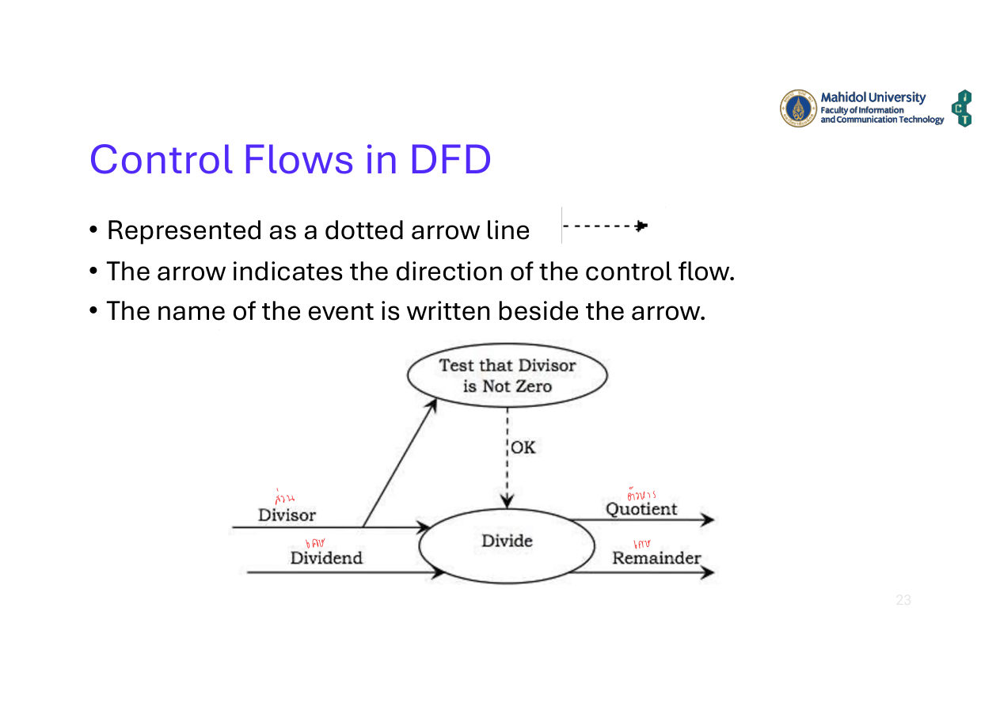
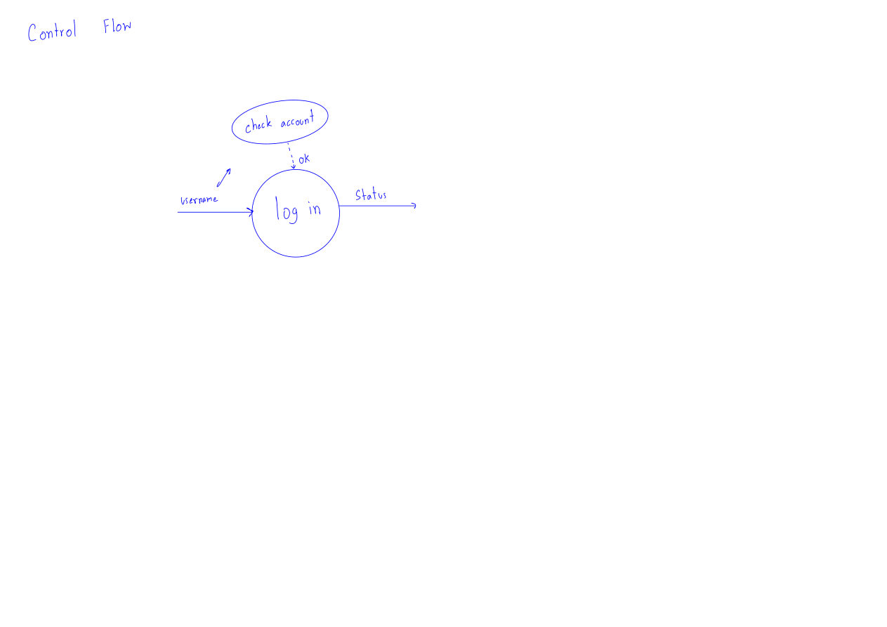
- Control flow แทน event และ process ที่จัดการ event • event = เงื่อนไข Boolean (จาก sensor ที่ซอฟต์แวร์อ่าน, interrupt, switch ที่ผู้ใช้กด, data condition)
- Control flow = สัญญาณที่สั่งงานหรือบอกว่าอะไรเกิดขึ้น เกิดที่ จุดเวลาหนึ่ง (discrete point in time)
- วาดเป็น ลูกศรเส้นประ ทิศทางตามลูกศร ชื่อ event เขียนข้างเส้น
- Control specification (CSPEC) ใช้ได้: state diagram (sequential spec) หรือ combinatorial spec = state transition table, decision tables, activation tables
username เข้า process "log in", output status, และมีวง check account ส่ง control flow เส้นประ OK มาที่ log in • ตัวอย่างสไลด์ (หน้า 23): Test that Divisor is Not Zero ส่ง OK เส้นประไปที่ Divide (Divisor/Dividend เข้า, Quotient/Remainder ออก) คุณจดคำไทยกำกับ ส่วน/ตัวตั้ง ตัวหาร ผลหาร เศษ2. Error detection in DFD
อาจารย์บอกว่าส่วนนี้ ให้วิเคราะห์ DFD แล้วตอบคำถาม ใช้เช็คลิสต์ด้านล่างไล่ทีละเส้น ทีละกล่อง
ลืมศัพท์? แตะคำที่มีเส้นประใต้คำ หรือดูแผนที่คำศัพท์ใน S1
เช็คลิสต์หา error (ไล่ตามลำดับ)
- ทุก flow ต้องมี process อยู่ปลายหนึ่ง? ห้าม entity→entity, entity↔data store, store→store
- ทุก process มี input อย่างน้อย 1 และ output อย่างน้อย 1?
- ทุก flow มีชื่อ? ทุก icon มี label? (ชื่อซ้ำกันบนหลาย flow ที่เป็นข้อมูลต่างกันก็น่าสงสัย)
- flow ห้ามแตกเป็นหลายเส้น ในแบบที่ข้อมูลต่างกัน
- เลข process: context = 0, level 1 = 1,2,3, level 2 = 1.1, 1.2 ...; ไม่เกิน 7 process ต่อ diagram; process ต้องมีเลข
- Data store ต้องเชื่อมระหว่าง process (ผ่าน process เท่านั้น) และมี label
- Balancing: flow เข้า/ออกของ parent ต้องตรงกับ child; ชื่อ flow ที่ขยายลงระดับต้องรวมกันได้เท่า parent
- Logical modeling: ชื่อ flow อธิบายข้อมูล ไม่ใช่วิธี implement
2.1 แบบฝึกจากสไลด์ "Correct/Incorrect?" (L6 หน้า 38–41)
หน้า 39–41 ตัดมาแค่ส่วนของแผนภาพ จึงตัดสินจากว่า flow เชื่อมถูกคู่หรือไม่ (ต้องมี process อยู่ปลายหนึ่ง) เฉลยด้านล่างเป็น การวิเคราะห์ของผมจากกฎในสไลด์ ไม่ใช่เฉลยทางการของอาจารย์ (สไลด์ไม่มีเฉลย) ลองตอบเองก่อนกดเปิด
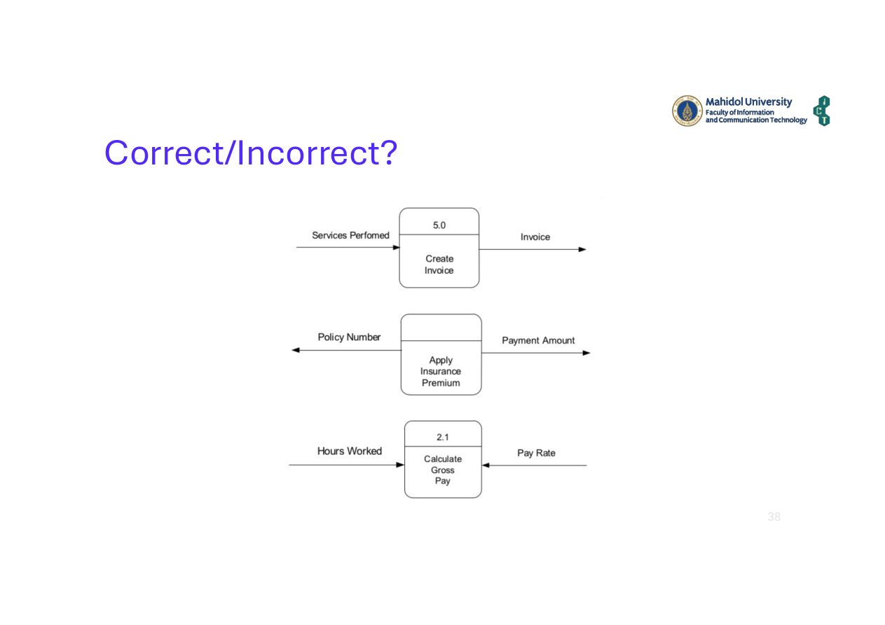
เปิดเฉลย
- 5.0 Create Invoice: ถูก (มี input 1 output 1)
- Apply Insurance Premium: ผิด มีแต่ output (ไม่มี input) และ ไม่มีเลข process
- 2.1 Calculate Gross Pay: ผิด มีแต่ input ไม่มี output
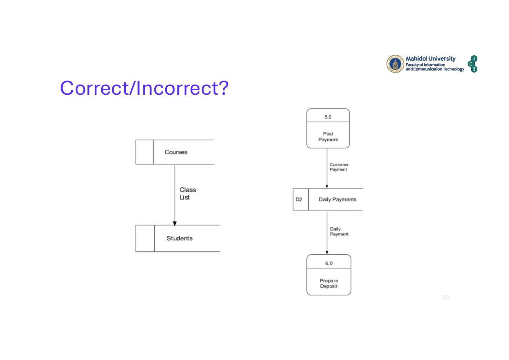
เปิดเฉลย
- (a) ผิด store → store ไม่ผ่าน process
- (b) ถูก process → store → process
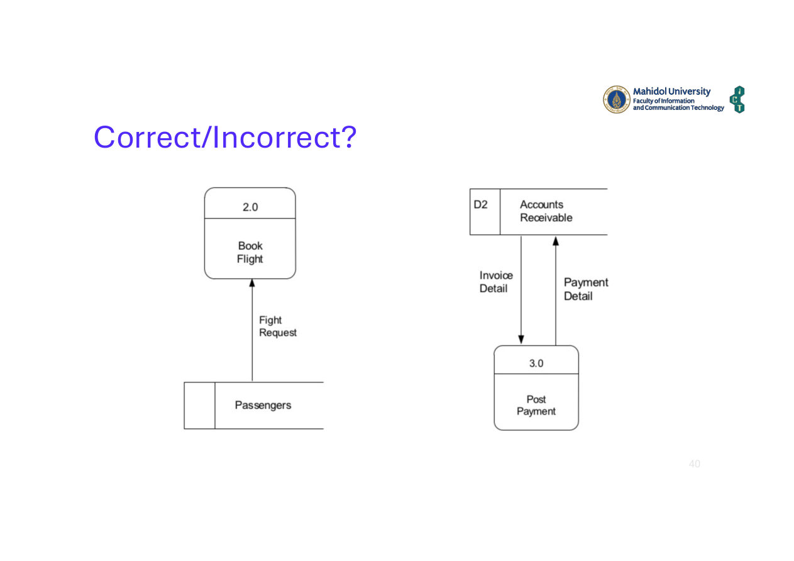
เปิดเฉลย
- (a) ถูก: store → process คือการดึงข้อมูล (retrieval) โจทย์ชุดนี้ถามเรื่อง flow เชื่อมถูกคู่ไหม ส่วน 2.0 ยังไม่เห็น output เพราะสไลด์ตัดมาแค่ส่วนเดียวของแผนภาพ
- (b) ถูก: process อ่านและอัปเดต store ได้ทั้งสองทิศ (3.0 มีทั้ง input และ output)
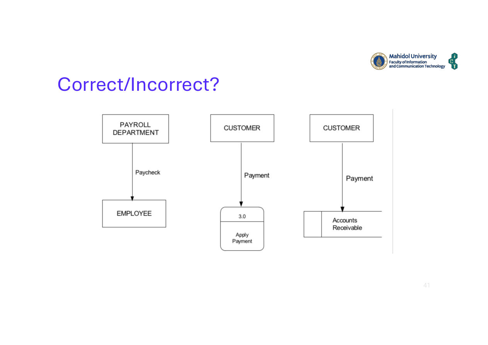
เปิดเฉลย
- (a) ผิด entity → entity • (b) ถูก • (c) ผิด entity → store ต้องผ่าน process
2.2 "List the Errors in This DFD" (L6 หน้า 42)
พบ 0 / 3 ลองหาก่อนเปิดเฉลย: กดบนภาพตรงจุดที่คิดว่าผิดกฎ ผมแน่ใจ 3 จุด
หรือเลือกจากรายการ:
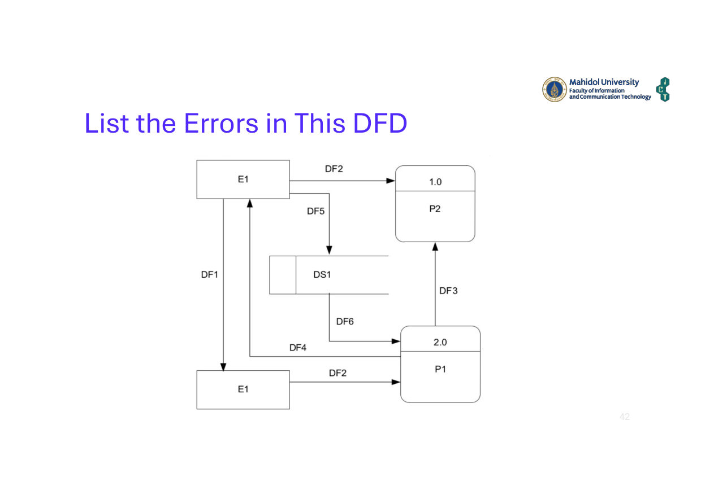
เปิดเฉลย (วิเคราะห์ของผม ตรวจเทียบกฎในสไลด์)
| # | ข้อผิดพลาด | กฎที่ละเมิด |
|---|---|---|
| 1 | DF1: E1 → E1 (entity ส่งข้อมูลตรงถึง entity) | flow ต้องเริ่ม/จบที่ process |
| 2 | DF5: E1 → DS1 (entity เข้า data store ตรงๆ) | flow ต้องผ่าน process; data store เป็นตัวเชื่อมระหว่าง process |
| 3 | P2 (1.0) มี input (DF2, DF3) แต่ ไม่มี output | process ต้องมีอย่างน้อย 1 input และ 1 output |
| 4 | DF2 ใช้ชื่อซ้ำ 2 เส้น (E1 → P2 และ E1 → P1) และ E1 มี 2 กล่อง ชื่อซ้ำ | flow แต่ละเส้นควรมีชื่อสื่อความหมายและไม่กำกวม (สังเกตไว้ ไม่ใช่กฎตายตัว) |
| 5 | เลข process กลับด้าน/ชื่อ: P2 เป็น 1.0, P1 เป็น 2.0 และ DS1 ไม่มีเลข D1 ชื่อเป็น P1/P2 ไม่สื่อความหมาย | ทุก icon ต้อง label อย่างมีความหมาย (logical naming) |
ที่ ถูก: DF3 (P1→P2), DF4 (P1→E1), DF6 (DS1→P1), DF2 (E1→P1) เพราะมี process อยู่ปลายหนึ่ง
3. Git functions
3.1 Configuration management และ Version control
- Configuration item = สิ่งที่เปลี่ยนแปลงได้และต้องติดตาม: โค้ด เอกสาร requirement/analysis/design คู่มือ ตัวขับทดสอบ การตั้งค่าระบบ (เช่นเวอร์ชันคอมไพเลอร์) แม้ hardware config
- Version identification 2 แบบ: (1) version numbering เช่น V1, V1.1, V1.2, V2.1 (ชื่อไม่สื่อความหมาย) (2) attribute-based เช่น วันที่ ผู้สร้าง ภาษา ลูกค้า สถานะ
3.2 Git = distributed VCS
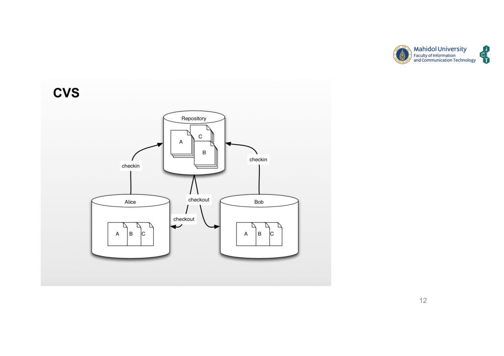
- ฟรี open-source จัดการโปรเจกต์ตั้งแต่เล็กจนใหญ่ เร็ว มี local branching, staging area, หลาย workflow (เหนือ Subversion/CVS)
- ทุกอย่างเป็น local ทำงาน offline ได้ ทุก clone เป็น backup มี history ครบ (ต่างจาก CVS ที่มี repository กลางและ checkin/checkout)
3.3 Staging area และวงจรสถานะไฟล์
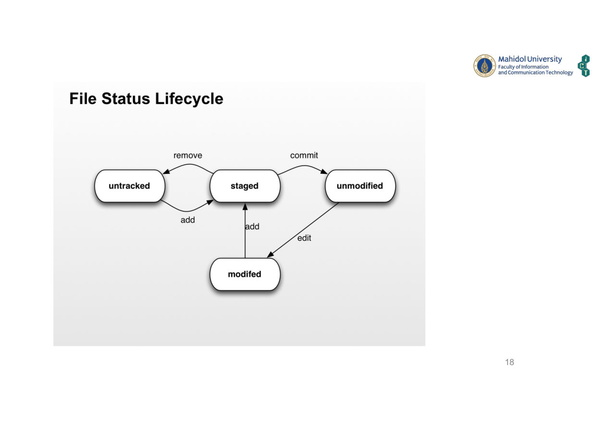
ลำดับ: working directory → (git add) → staging area → (git commit) → local repository → (git push) → remote repository
3.4 คำสั่งหลักจากสไลด์
| คำสั่ง | ทำอะไร (ตามสไลด์) |
|---|---|
git add <file> | เพิ่มการเปลี่ยนแปลงที่เลือกจาก working directory เข้า staging area ระบุว่า commit ถัดไปจะมีอะไร; ตรวจดูได้ก่อน commit |
git commit -m "message" | เพิ่ม staged changes เข้า local repository สร้างเวอร์ชันใหม่ (commit) ข้อความอธิบายสิ่งที่เปลี่ยน |
git pull | ดึงการเปลี่ยนแปลงจาก remote มาที่ local = fetch + merge เข้า branch ปัจจุบัน; merge ส่วนมากอัตโนมัติ conflict เกิดได้แต่แก้ไม่ยาก |
git push | ส่ง local commits ไป remote ให้คนอื่นเห็น; อาจถูกปฏิเสธถ้า remote มีการเปลี่ยนแปลงที่ local ยังไม่มี (ต้อง pull ก่อน) |
3.5 คำสั่งจาก cheat sheet (GitHub Education)
ใบประกาศบอกห้ามนำ cheat sheet เข้าห้องสอบ แต่คำสั่งเหล่านี้อยู่ในชุดที่อาจารย์แจก จึงควรจำให้ได้ แบ่งเป็นกลุ่ม
git config --global user.name "[ชื่อ]"ตั้งชื่อผู้ทำ commitgit config --global user.email "[อีเมล]"git initเปลี่ยนโฟลเดอร์เป็น repogit clone [url]ดึง repo ทั้งก้อนจาก URL
git statusดูไฟล์ที่แก้/stagedgit add [file]stagegit reset [file]เอาออกจาก stage (งานยังอยู่)git diffดูที่แก้แต่ยังไม่ stagegit diff --stagedดูที่ stage แล้วยังไม่ commitgit commit -m "..."
git branchลิสต์ branch (มี * ที่ branch ปัจจุบัน)git branch [name]สร้าง branch ใหม่ที่ commit ปัจจุบันgit checkoutสลับ branchgit merge [branch]รวมประวัติของ branch ที่ระบุเข้า branch ปัจจุบันgit logดูประวัติ commit
git remote add [alias] [url]ตั้งชื่อย่อให้ URLgit fetch [alias]ดึงทุก branch จาก remote (ไม่ merge)git merge [alias]/[branch]git push [alias] [branch]git pull= fetch + merge
git rm [file]ลบไฟล์และ stage การลบgit mv [old] [new]ย้าย/เปลี่ยนชื่อและ stagegit log --stat -Mดู log พร้อมไฟล์ที่ย้าย
git stashเก็บงานชั่วคราว •stash list•stash popเอากลับ •stash dropทิ้งgit rebase [branch]•git reset --hard [commit]ล้าง stage และเขียน working tree ใหม่ (ระวัง งานหาย)git log branchB..branchA•git diff branchB...branchA•git show [SHA]- ไฟล์
.gitignoreกันไม่ให้ stage/commit ไฟล์ที่ไม่ต้องการ
3.6 Branching
- master = branch เริ่มต้น เป็น production code พร้อม deploy ต้อง stable: ห้าม push อะไรที่ไม่ผ่านการทดสอบหรือทำ build พัง
- ควรสร้าง branch ใหม่เมื่อ: เพิ่ม feature ใหม่ / ทำ release ใหม่ / ทดลองการเปลี่ยนแปลง / แก้ bug
- Branching เป็นของชั่วคราว ได้รับการสนับสนุน; merge ส่วนมากอัตโนมัติ แต่ conflict ตอน merge เป็นปัญหา ควรมี workflow ที่กำหนดไว้
Git branching model (nvie)
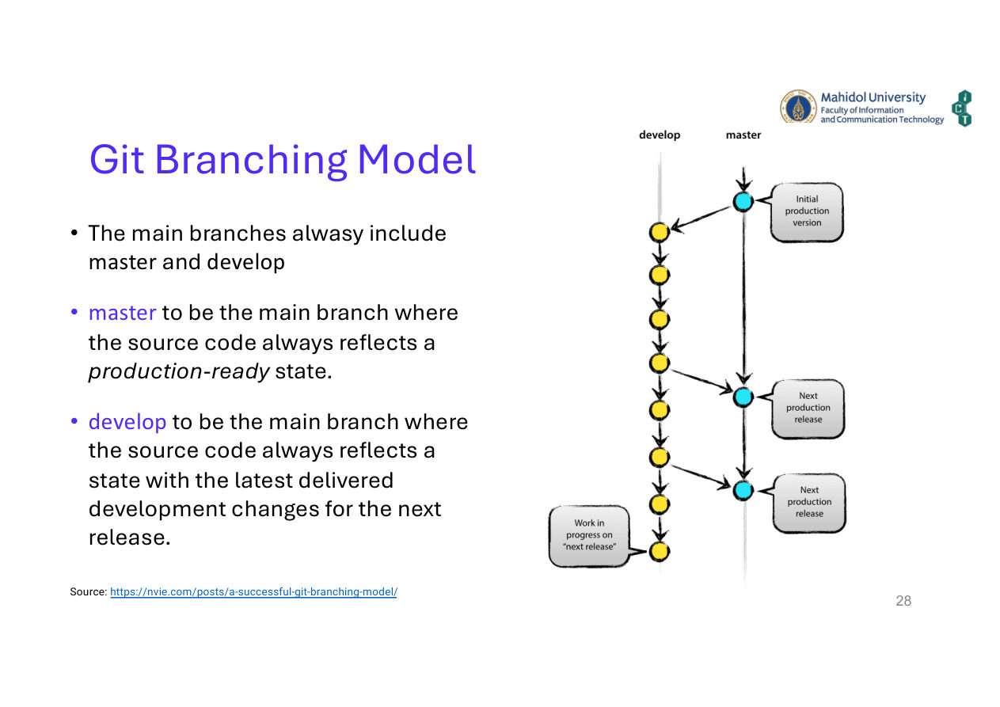
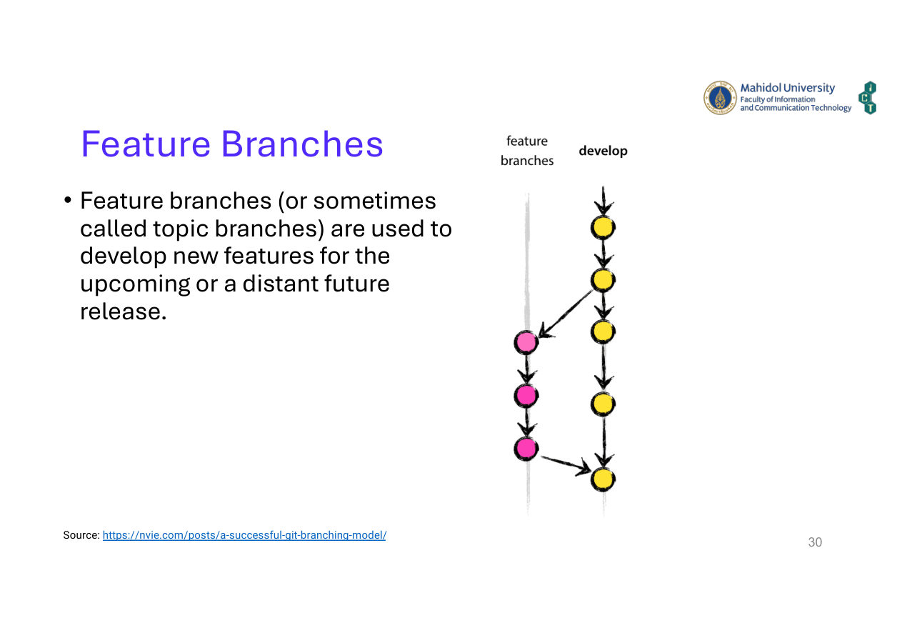
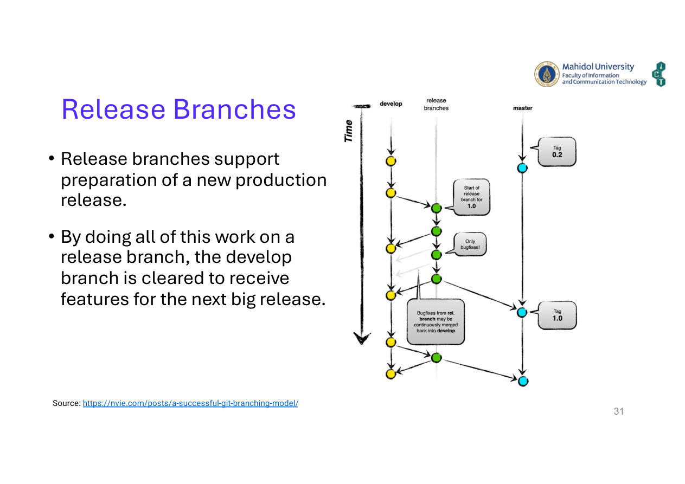
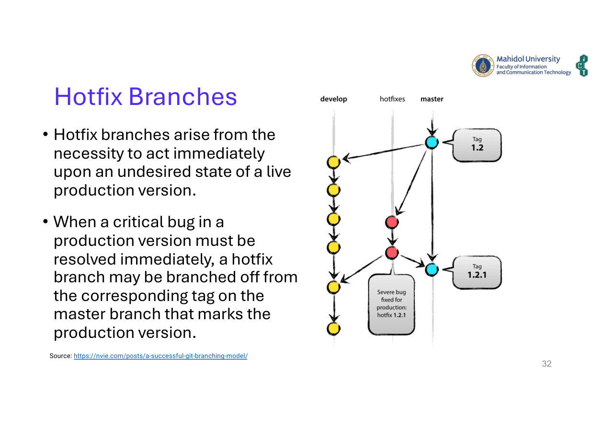
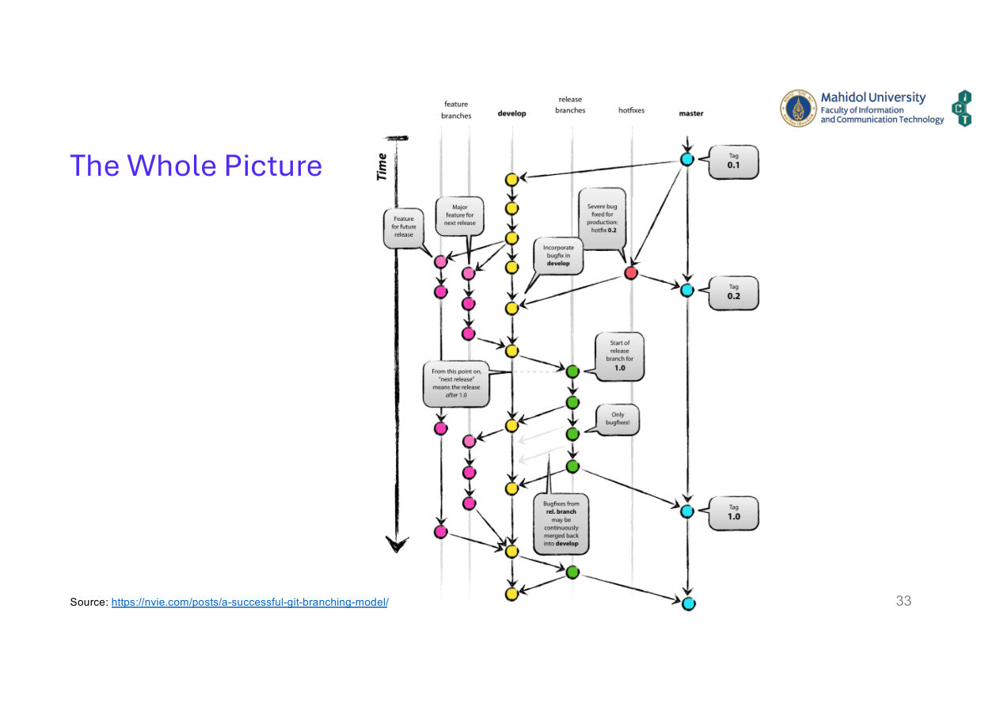
| Branch | บทบาท | แตกจาก → รวมกลับ |
|---|---|---|
| master | source code สะท้อนสถานะ production-ready เสมอ (มี tag เช่น 0.1, 1.0, 1.2.1) | main |
| develop | สะท้อน งานล่าสุดที่ส่งมอบแล้วสำหรับ release ถัดไป | main |
| Feature (topic) | พัฒนา feature ใหม่สำหรับ release ที่จะมาหรืออนาคตไกล | develop → develop |
| Release | เตรียม production release ใหม่ (แก้บั๊กเล็ก) ทำให้ develop ว่างรับ feature ของ release ถัดไป | develop → master และ develop |
| Hotfix | แก้บั๊กวิกฤตของ production ทันที แตกจาก tag บน master (เช่น 1.2 → แก้เป็น 1.2.1) | master → master และ develop |
4. Unit test (+ JUnit + แบบฝึกหัด 5–8)
4.1 Testing และระดับของการทดสอบ
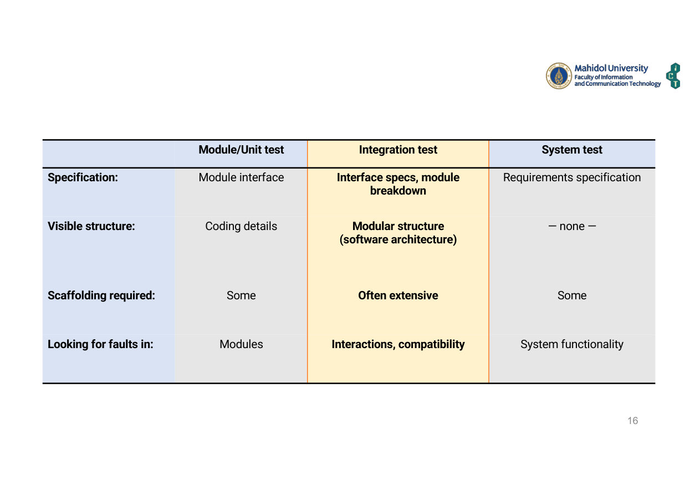
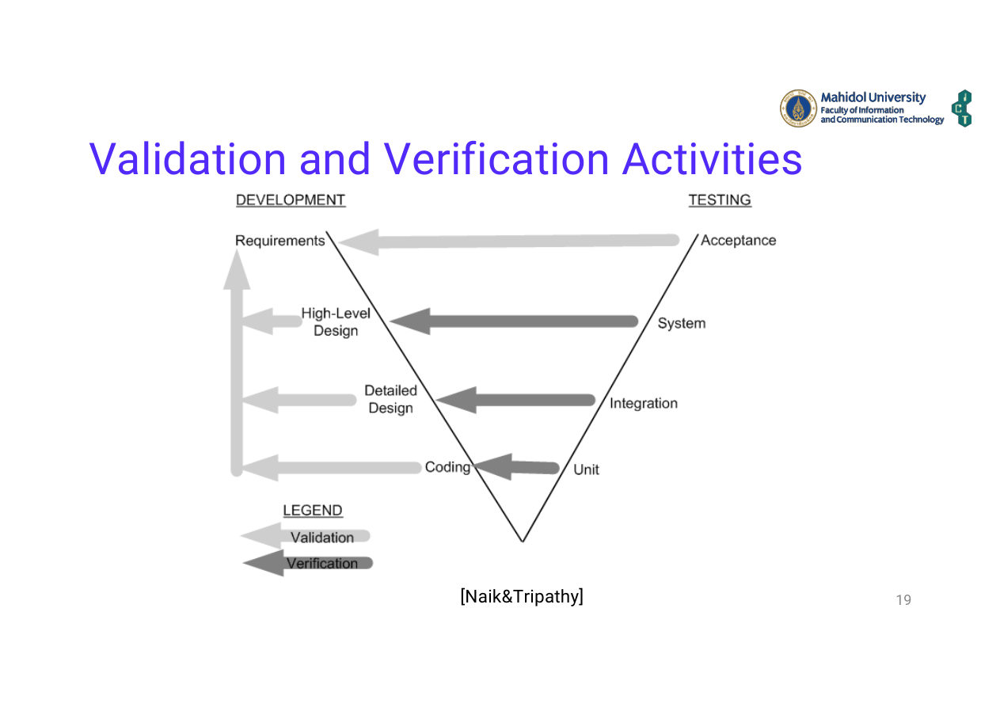
| Unit / Module test | Integration test | System test | |
|---|---|---|---|
| ทดสอบอะไร | หน่วยเล็กสุดของ source code (function/class) | กลุ่มของ module ที่รวมกัน | ระบบที่ integrate สมบูรณ์ |
| ต้นทุน/ความถี่ | เล็กสุด เร็วสุด ถูกสุด ทำบ่อย | ปานกลาง ทำไม่บ่อยนัก | แพงสุด ทำนานๆ ครั้ง |
| Specification | Module interface | Interface specs, module breakdown | Requirements specification |
| Visible structure | Coding details | Modular structure (architecture) | — none — |
| Scaffolding | Some | Often extensive | Some |
| หา fault ที่ | Modules | Interactions, compatibility | System functionality |
- Integration test: ทดสอบการทำงานร่วมกันระหว่างหน่วย หา issue ที่ interface, data flow, dependency (เช่นฟังก์ชันที่ต้องพึ่งการเชื่อมต่อฐานข้อมูล) เป็นสะพานระหว่าง unit กับ system
- Unit vs Integration: unit test เป็นรากฐานที่ขาดไม่ได้ (controllability/visibility สูงสุด); integration ชดเชย unit ที่ไม่พอไม่ได้; ถ้า integration เจอ module fault = unit test ไม่พอ; ถ้า fault อยู่ที่ interface ระหว่าง module ที่เขียนถูก = ปัญหาอยู่ที่การแบ่ง module/interface spec
- System test: ตรวจระบบทั้งหมดตรงกับ requirement; แบบ Functional / Non-functional (performance, usability, reliability) / Security
- Regression testing: ยืนยันว่าการแก้โค้ดล่าสุดไม่ทำให้ของเดิมพัง ใช้หลัง bug fix, เพิ่ม feature/enhancement, ปรับ performance, ระหว่าง maintenance ประจำ
- Verification vs Validation (V-model, Naik&Tripathy): verification ฝั่งซ้ายล้อกับ development, validation ไล่ Unit → Integration → System → Acceptance
4.2 คุณสมบัติของ unit test ที่ดี
- แต่ละ test โฟกัส 1 function/method ไม่พึ่งส่วนอื่น
- รัน เร็ว เพื่อทดสอบต่อเนื่องระหว่างพัฒนา
- รัน อัตโนมัติได้ในสาย CI/CD
- ได้ผล เหมือนเดิมทุกครั้ง ไม่ขึ้นกับปัจจัยภายนอก (deterministic)
Best practices: โค้ด modular/แยกส่วน • ใส่ใน CI/CD • จำลอง dependency (simulate/mock) • ใช้ coverage เพื่อเข้าใจว่าทดสอบไปแค่ไหน เน้น meaningful coverage ไม่ต้อง 100%
4.3 JUnit
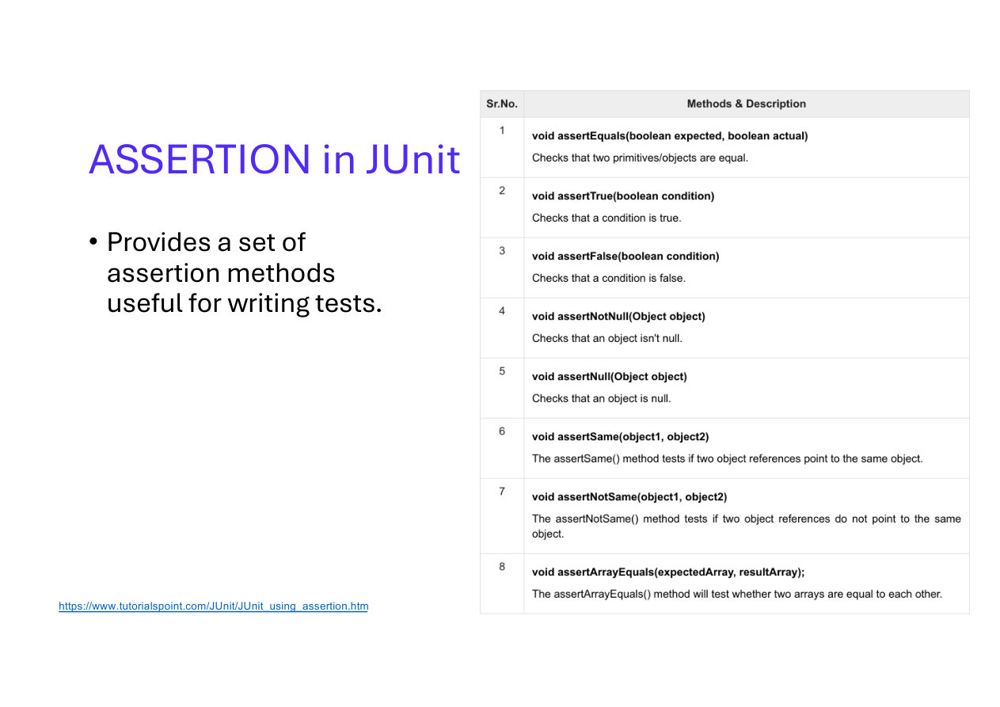
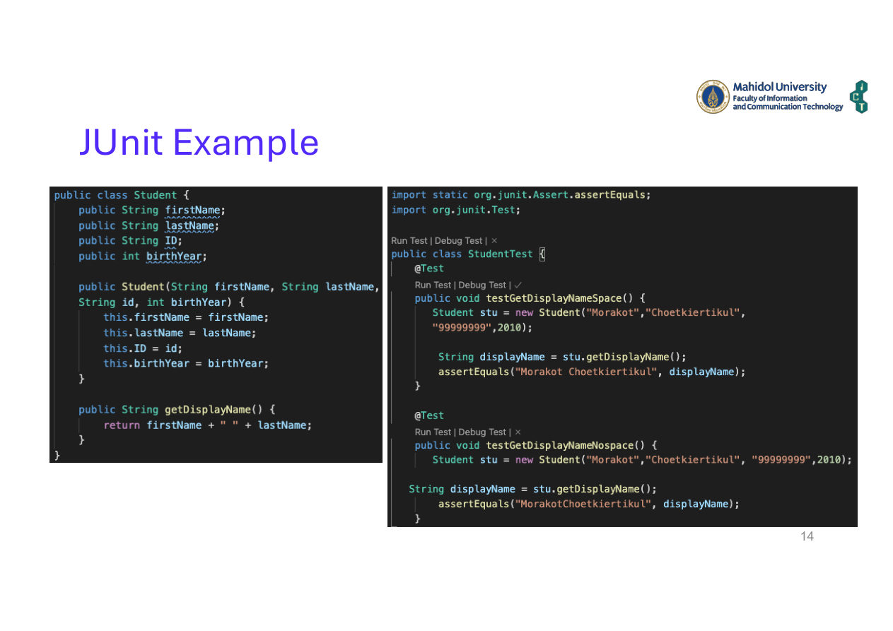
- เป็น unit testing framework ของ Java มาตรฐาน TDD (พัฒนาช่วงกลางทศวรรษ 90) ผูกเป็น JAR ตอน compile; ใช้กับ Eclipse, Ant, Maven
- ให้ Annotation ระบุ test method + assertion methods ตรวจผลที่คาดหวัง + test runner รันเทส
- JUnit checklist: Initialize → Write test cases → Write a test suite → Execute test suite
@Test= บอก JUnit ว่า method นี้รันเป็น test ได้ • lifecycle ตามสไลด์:@BeforeClass→ (ต่อแต่ละ test:@Before→@Test→@After) →@AfterClass
| Assertion | ตรวจอะไร |
|---|---|
assertEquals(expected, actual) | สอง primitive/object เท่ากัน |
assertTrue(cond) / assertFalse(cond) | เงื่อนไขเป็นจริง / เท็จ |
assertNotNull(obj) / assertNull(obj) | object ไม่เป็น null / เป็น null |
assertSame(o1, o2) / assertNotSame | อ้างอิง object ตัวเดียวกัน / คนละตัว |
assertArrayEquals(expectedArray, resultArray) | อาร์เรย์เท่ากัน |
ตัวอย่างสไลด์ (class Student มี getDisplayName() = firstName + " " + lastName):
@Test
public void testGetDisplayNameSpace() {
Student stu = new Student("Morakot","Choetkiertikul","99999999",2010);
String displayName = stu.getDisplayName();
assertEquals("Morakot Choetkiertikul", displayName); // ผ่าน: มีเว้นวรรค
}
@Test
public void testGetDisplayNameNospace() {
...
assertEquals("MorakotChoetkiertikul", displayName); // ไม่ผ่าน: ขาดเว้นวรรค
}
assertEquals(expected, actual) ลำดับ expected มาก่อน actual • test ที่ 2 ในตัวอย่างสไลด์ fail เพราะ method คืนค่ามีเว้นวรรค4.4 เทคนิคออกแบบ test case (ท้าย L13: แบบฝึกหัด 5–8)
BVA (Exercise 5: ตั๋วอุทยาน ตามอายุ)
กฎ: อายุ <12 ฟรี • 18–60 = 200 บาท • <18 และ >60 = 100 บาท (ตามสไลด์) — เฉลยในสไลด์:
| Class | All cases | Reduced | Expected |
|---|---|---|---|
| Invalid (<0) | -1, 0 | -1 | Error: Invalid Age |
| 0–11 | -1,0,1, 10,11,12 | 0, 11 | Free |
| 12–17 | 11,12,13, 16,17,18 | 12, 17 | 100 |
| 18–60 | 17,18,19, 59,60,61 | 18, 60 | 200 |
| >61 | 60, 61 | 61 | 100 |
หลักคิด BVA: ทดสอบ ค่าที่ขอบ ของแต่ละช่วง: ค่าขอบ, ต่ำกว่าขอบ 1, สูงกว่าขอบ 1 แล้วลดเหลือค่าที่อยู่ในคลาส
ECP (Exercise 6: ส่วนลดสมาชิก) ใช้ 1 ตัวแทนต่อ 1 คลาส
| Class | Representative | Expected |
|---|---|---|
| <= 0 | -5 | Invalid input |
| 1–500 | 450 | No discount |
| 501–999 | 658 | 5% discount |
| 1,000–4,999 | 2,599 | 10% discount |
| 5,000–100,000 | 45,100 | 20% discount |
| >100,000 | 111,111 | Invalid input |
BVA ของโจทย์ส่วนลดเดียวกัน (Exercise 7) ตัวที่ reduced
≤0: -1 • 1–500: 1, 500 • 501–999: 501, 999 • 1,000–4,999: 1000, 4999 • 5,000–100,000: 5000, 100000 • >100,000: 100001
White-box: Path analysis และ Cyclomatic complexity (Exercise 8)
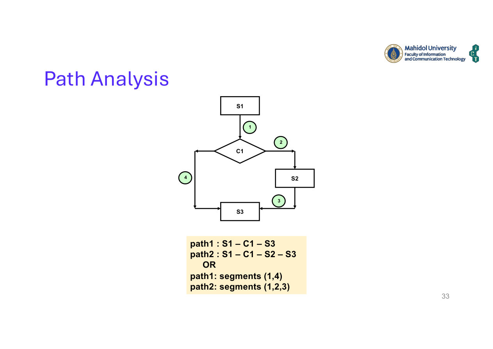
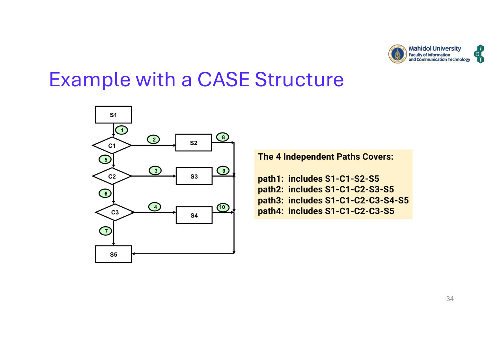
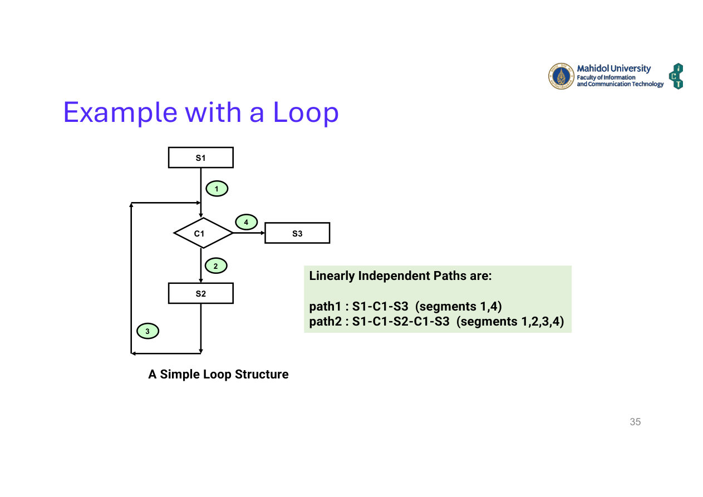
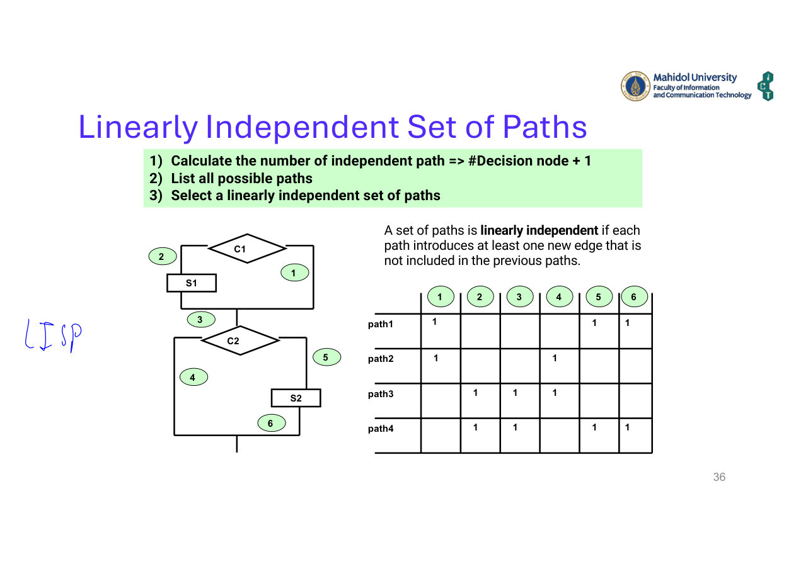
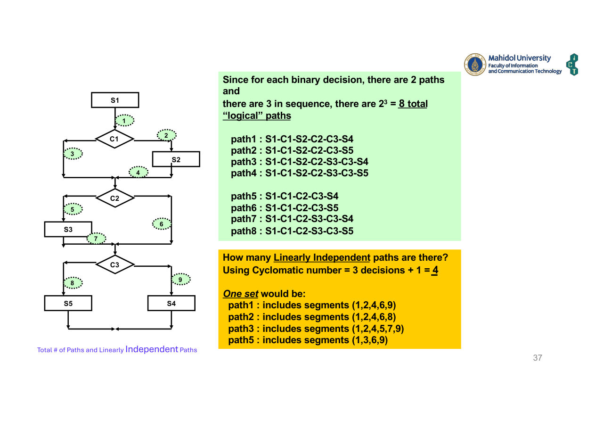
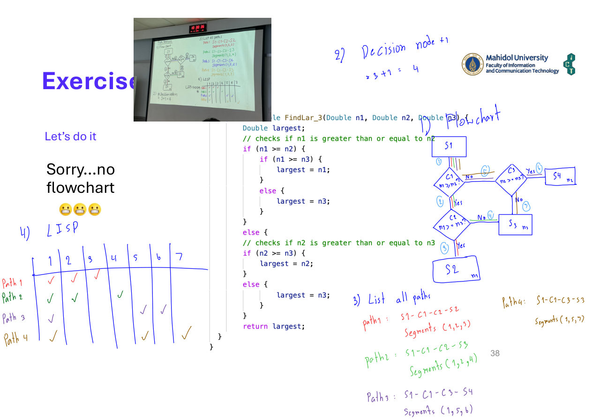
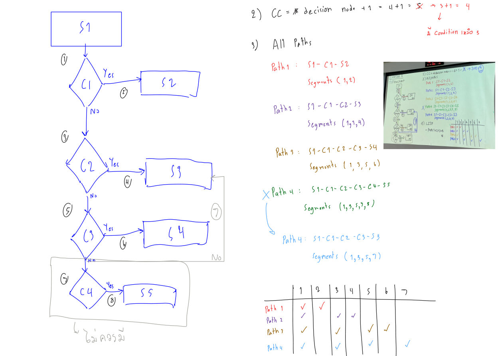
- ถ้ามี 3 decision ต่อกัน มี path ที่เป็นไปได้ทั้งหมด 23 = 8 (logical paths) แต่ linearly independent มีแค่ 3+1 = 4
- บันทึก path ได้ 2 แบบ: ชื่อโหนด (S1-C1-S3) หรือ segments (1,4) แล้วทำ ตาราง LISP (path × segment) ติ๊กว่า path ไหนผ่าน segment ไหน
โค้ดของ Exercise 8 (Zoo ticket) ตามสไลด์เฉลย: if 0<age<=12 return 50; elif 13<=age<=20 return 100; elif 21<=age<=60 return 150; elif age>60 return 100
FindLar_3) CC = decision node + 1 = 3+1 = 4 • Path1 S1-C1-C2-S2 (1,2,3) • Path2 S1-C1-C2-S3 (1,2,4) • Path3 S1-C1-C3-S4 (1,5,6) • Path4 S1-C1-C3-S3 (1,5,7)4.5 ที่เหลือใน L12/L13 ที่ควรรู้ผ่านๆ
- QA = กิจกรรมทั้งหมดที่วัดและปรับปรุงคุณภาพของ product และ process • QC = กิจกรรมตรวจสอบคุณภาพ product และหา fault
- Error detection techniques: code review (inspection, peer review, walkthrough), testing, static analysis, dynamic analysis, debugging, formal methods
- Testing types: unit, integration, system, acceptance (ตรง requirement ผู้ใช้/ธุรกิจ), regression
- Usability = วัดว่าใช้ง่ายและมีประสิทธิภาพ • ทดสอบแบบ task-based, A/B, survey • วัดผลเชิงปริมาณ เช่นเวลาทำงาน, อัตรา error
- When to stop testing: รัน test ที่วางแผนครบ + แก้ปัญหาที่พบหมด หรือไม่พบ error เพิ่ม / defect seeding
แหล่งที่มาและข้อจำกัด
- สไลด์อาจารย์: L6, L7 (DFD), L11 (VCS/Git), L12, L13 (Testing) + Git cheat sheet (GitHub Education) + โน้ต Goodnotes ที่เขียนบนสไลด์
- ไม่ใช่เฉลยทางการ: เฉลยแบบฝึก Correct/Incorrect และ "List the Errors" เป็นการวิเคราะห์จากกฎในสไลด์ สไลด์ไม่ได้ให้เฉลย
- โน้ตลายมือบางส่วนอ่านตัวเลข segment ไม่ชัด (Path 4 ของ Exercise 8) ให้เทียบกับของจริงอีกครั้ง
- ใบประกาศมีหัวข้อ "ITDS262" ขณะไฟล์เรียนเป็น ITDS261 ผมใช้ตามไฟล์เนื้อหา